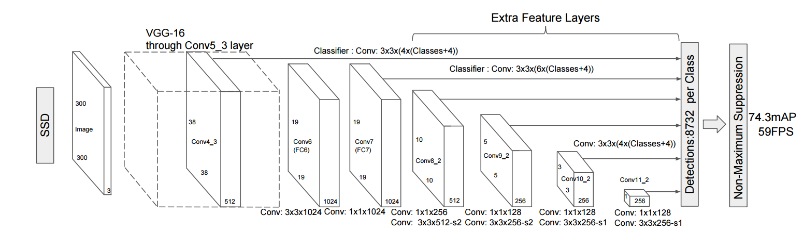

# SSD目标检测
## 概述
SSD全称为Single Shot MultiBox Detector，是目标检测领域较新且效果较好的检测算法之一，具体参见论文\[[1](#引用)\]。SSD算法主要特点是检测速度快且检测精度高。PaddlePaddle已集成SSD算法，本示例旨在介绍如何使用PaddlePaddle的SSD模型进行目标检测。下文展开顺序为：首先简要介绍SSD原理，然后介绍示例包含文件及作用，接着介绍如何在PASCAL VOC数据集上训练、评估及检测，最后简要介绍如何在自有数据集上使用SSD。
## SSD原理
SSD使用一个卷积神经网络实现“端到端”的检测，所谓“端到端”指输入为原始图像，输出为检测结果，无需借助外部工具或流程进行特征提取、候选框生成等。论文中SSD的基础模型为VGG-16，其在VGG-16的某些层后面增加了一些额外的层进行候选框的提取，下图为模型的总体结构：

图1. SSD网络结构
如图所示，候选框的生成规则是预先设定的，比如Conv7输出的特征图每个像素点会对应6个候选框，这些候选框长宽比或面积有区分。在预测阶段模型会对这些提取出来的候选框做后处理，然后输出作为最终的检测结果。
## 示例总览
本示例共包含如下文件：
文件 | 用途
---- | -----
train.py | 训练脚本
eval.py | 评估脚本，用于评估训好模型
infer.py | 检测脚本，给定图片及模型，实施检测
visual.py | 检测结果可视化
image_util.py | 图像预处理所需公共函数
data_provider.py | 数据处理脚本，生成训练、评估或检测所需数据
config/pascal\_voc\_conf.py | 神经网络超参数配置文件
data/label\_list | 类别列表
data/prepare\_voc\_data.py | 准备训练PASCAL VOC数据列表
表1. 示例文件
训练阶段需要对数据做预处理，包括裁剪、采样等，这部分操作在```image_util.py```和```data_provider.py```中完成；值得注意的是，```config/vgg_config.py```为参数配置文件，包括训练参数、神经网络参数等，本配置文件包含参数是针对PASCAL VOC数据配置的，当训练自有数据时，需要仿照该文件配置新的参数；```data/prepare_voc_data.py```脚本用来生成文件列表，包括切分训练集和测试集，使用时需要用户事先下载并解压数据，默认采用VOC2007和VOC2012。
## PASCAL VOC数据集
### 数据准备
首先需要下载数据集，VOC2007\[[2](#引用)\]和VOC2012\[[3](#引用)\]，VOC2007包含训练集和测试集，VOC2012只包含训练集，将下载好的数据解压，目录结构为```VOCdevkit/{VOC2007，VOC2012}```。进入```data```目录，运行```python prepare_voc_data.py```即可生成```trainval.txt```和```test.txt```，默认```prepare_voc_data.py```和```VOCdevkit```在相同目录下，且生成的文件列表也在该目录。需注意```trainval.txt```既包含VOC2007的训练数据，也包含VOC2012的训练数据，```test.txt```只包含VOC2007的测试数据。
### 预训练模型准备
下载预训练的VGG-16模型，我们提供了一个转换好的模型，具体下载地址为：，下载好模型后，放置路径为```vgg/vgg_model.tar.gz```。
### 模型训练
直接执行```python train.py```即可进行训练。需要注意本示例仅支持CUDA GPU环境，无法在CPU上训练。```train.py```的一些关键执行逻辑：
```python
paddle.init(use_gpu=True, trainer_count=4)
data_args = data_provider.Settings(
data_dir='./data',
label_file='label_list',
resize_h=cfg.IMG_HEIGHT,
resize_w=cfg.IMG_WIDTH,
mean_value=[104,117,124])
train(train_file_list='./data/trainval.txt',
dev_file_list='./data/test.txt',
data_args=data_args,
init_model_path='./vgg/vgg_model.tar.gz')
```
调用```paddle.init```指定使用4卡GPU训练；调用```data_provider.Settings```配置数据预处理所需参数，其中```cfg.IMG_HEIGHT```和```cfg.IMG_WIDTH```在配置文件```config/vgg_config.py```中设置，这里均为300；调用```train```执行训练，其中```train_file_list```指定训练数据列表，```dev_file_list```指定评估数据列表，```init_model_path```指定预训练模型位置。训练过程中会打印一些日志信息，每训练10个batch会输出当前的轮数、当前batch的cost及mAP，每训练一个pass，会保存一次模型，默认保存在```checkpoints```目录下（注：需事先创建）。
### 模型评估
执行```python eval.py```即可对模型进行评估，```eval.py```的关键执行逻辑如下：
```python
paddle.init(use_gpu=True, trainer_count=4) # use 4 gpus
data_args = data_provider.Settings(
data_dir='./data',
label_file='label_list',
resize_h=cfg.IMG_HEIGHT,
resize_w=cfg.IMG_WIDTH,
mean_value=[104, 117, 124])
eval(
eval_file_list='./data/test.txt',
batch_size=4,
data_args=data_args,
model_path='models/pass-00000.tar.gz')
```
调用```paddle.init```指定使用4卡GPU评估；```data_provider.Settings```参见训练阶段的配置；调用```eval```执行训练，其中```eval_file_list```指定训练数据列表，```batch_size```指定评估时batch size的大小，```model_path ```指定模型位置。评估结束会输出模型的```loss```信息和```mAP```信息。
### 图像检测
执行```python infer.py```即可使用训练好的模型对图片实施检测，```infer.py```最关键的逻辑如下：
```python
infer(
eval_file_list='./data/infer.txt',
save_path='infer.res',
data_args=data_args,
batch_size=4,
model_path='models/pass-00000.tar.gz',
threshold=0.3)
```
其中```eval_file_list```指定图像路径列表；```save_path```指定预测结果保存路径；```data_args```如上；```batch_size```为每多少样本预测一次；```model_path```指模型的位置；```threshold```为置信度阈值，只有得分大于或等于该值的才会输出。示例还提供了一个可视化脚本，直接运行```python visual.py```即可，须指定输出检测结果路径及输出目录。
## 自有数据集
在自有数据上训练PaddlePaddle SSD需要完成两个关键准备，首先需要适配网络可以接受的输入格式，这里提供一个推荐的结构，以```train.txt```为例
```
image00000_file_path image00000_annotation_file_path
image00001_file_path image00001_annotation_file_path
image00002_file_path image00002_annotation_file_path
...
```
文件共两列，以空白符分割，第一列为图像文件的路径，第二列为对应标注数据的文件路径。对图像文件的读取比较直接，略微复杂的是对标注数据的解析，本示例中标注数据使用xml文件存储，所以需要在```data_provider.py```中对xml解析，核心逻辑如下：
```python
bbox_labels = []
root = xml.etree.ElementTree.parse(label_path).getroot()
for object in root.findall('object'):
bbox_sample = []
# start from 1
bbox_sample.append(float(settings.label_list.index(
object.find('name').text)))
bbox = object.find('bndbox')
difficult = float(object.find('difficult').text)
bbox_sample.append(float(bbox.find('xmin').text)/img_width)
bbox_sample.append(float(bbox.find('ymin').text)/img_height)
bbox_sample.append(float(bbox.find('xmax').text)/img_width)
bbox_sample.append(float(bbox.find('ymax').text)/img_height)
bbox_sample.append(difficult)
bbox_labels.append(bbox_sample)
```
这里一条标注数据包括：label、xmin、ymin、xmax、ymax和is\_difficult，is\_difficult表示该object是否为难例，实际中如果不需要，只需把该字段置零即可。自有数据也需要提供对应的解析逻辑，假设标注数据（比如image00000\_annotation\_file\_path）存储格式如下：
```
label1 xmin1 ymin1 xmax1 ymax1
label2 xmin2 ymin2 xmax2 ymax2
...
```
每行对应一个物体，共5个字段，第一个为label（注背景为0，需从1编号），剩余4个为坐标，对应的解析逻辑可更改为如下：
```
bbox_labels = []
with open(label_path) as flabel:
for line in flabel:
bbox_sample = []
bbox = [float(i) for i in line.strip().split()]
label = bbox[0]
bbox_sample.append(label)
bbox_sample.append(bbox[1]/float(img_width))
bbox_sample.append(bbox[2]/float(img_height))
bbox_sample.append(bbox[3]/float(img_width))
bbox_sample.append(bbox[4]/float(img_height))
bbox_sample.append(0.0)
bbox_labels.append(bbox_sample)
```
另一个重要的事情就是根据图像大小及检测物体的大小等更改网络结构的配置，主要是仿照```config/vgg_config.py```创建自己的配置文件，参数设置经验请参照论文\[[1](#引用)\]。
## 引用
1. Liu, Wei, et al. "SSD: Single shot multibox detector." European conference on computer vision. Springer, Cham, 2016.
2. http://host.robots.ox.ac.uk/pascal/VOC/voc2007/index.html
3. http://host.robots.ox.ac.uk/pascal/VOC/voc2012/index.html